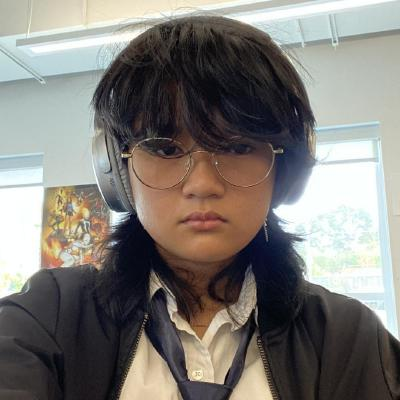

I'm Evalyn Alviar, a North Seattle College student building a strong foundation in IT, programming and digital design. I'm currently pursuing an associate's degree in Application Development, with the long-term goal of earning a bachelor's degree in Information Technology at a four-year college. My academic focus includes operating systems, python development, and web authoring, and I approach each project with a detail-oriented, problem-solving mindset.
I've developed hands-on experience through coursework that emphasizes pratical coding, structured design, and technical troubleshooting. These projects have strengthened my ability to analyze systems, write clean code, and adapt quickly when challenges arise. I enjoy breaking down complex tasks into manageable steps and finding solutions that are both efficient and well-structured.
Currently my goal with Application Development is to expand mt software development skills and become more confident in my coding abilities. I want to strengthened my understanding of core programming concepts, improve my problem-solving techiques, and build projects that reflect real-world development practices. As I continue learning, I'm focused on gaining the experience and confidence needed in my future profession in Information Technology.
Throughout my studies, I've taken pride in producing work that is functional, visually balanced, and thoughtfully designed. Whether I'm coding a project, refining a layout, or debugging an issue, I aim for clarity, precision, and continous improvement. These habits have helped me grow as a developer and stay committed to high-quality work.
Outside of class, I explore 3D printing, building personal computers, and digital art-interests that keep me curious and constantly learning. These hobbies allow me to experiment with technology in hands-on ways and fuel my motivation to understand how systems work beneath the surface. They also reflect my personality: creative, persistant, and the need to learn and improve.